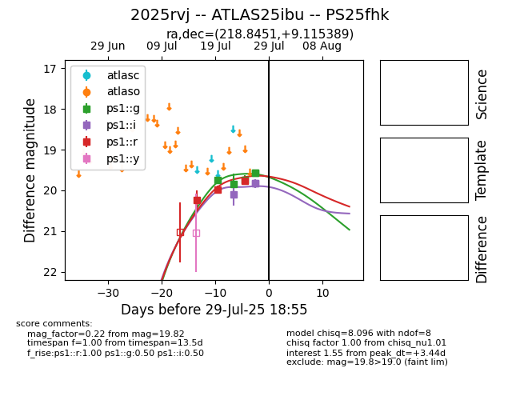

Target 2025rvj at 2025-07-29 18:55, see:
TNS: wis-tns.org/object/2025rvj
YSE: ziggy.ucolick.org/yse/transient_detail/2025rvj
alt names
2025rvj (yse,tns)
ATLAS25ibu (atlas)
PS25fhk (panstarrs)
coordinates:
equatorial (ra, dec) = (218.8451,+9.11539)
galactic (l, b) = (1.5660,+59.55873)
photometry
last ps1::g=19.56, ps1::i=19.82, ps1::r=19.76
5 ps1::g, 3 ps1::i, 3 ps1::r detections
